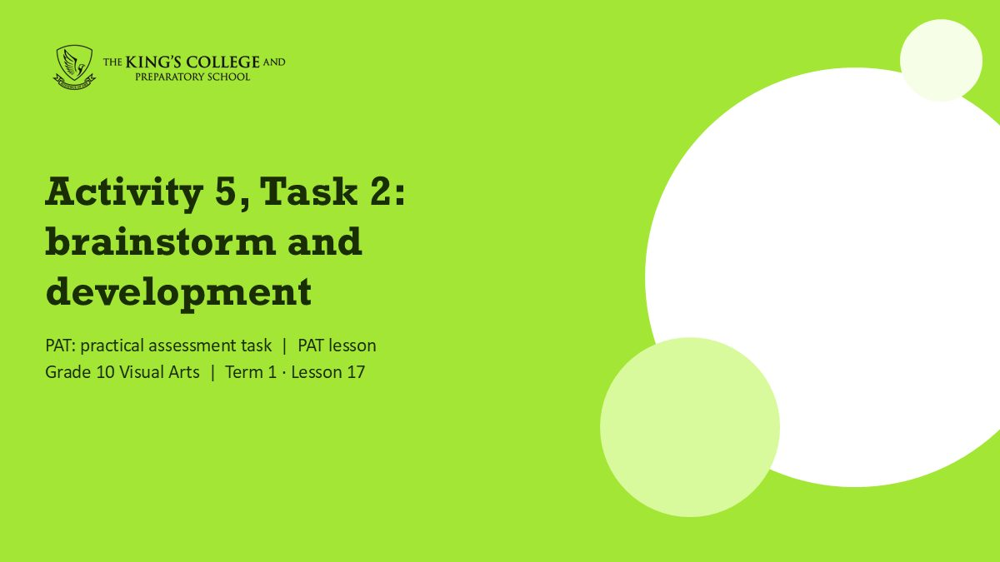

Term 1 · Lesson 16 · PAT lesson
Activity 5, Task 2: Brainstorm and Development
Start Here
Today I Will
- Use free writing and free association to find fresh ideas
- Explore the theme All In from several angles
- Choose the five objects I want to study most closely
Of all the objects you brought, which one would you keep studying if you could choose only one? Why?
Words to Know
| Word | Meaning |
|---|---|
| Free writing | Writing without stopping or correcting for a set time, to let ideas surface. |
| Free association | A chain of words in which each word is the first one the previous word brings to mind. |
| Mind map | A diagram that grows outwards from one central word into linked ideas. |
| Symbol | An object or image that stands for an idea, a person or a feeling. |
| Cliché | An idea or image used so often that it no longer surprises or says much. |
Slides

Notes
Going deeper: free writing, a free-association chain and a mind map on All In (heart, effort, faith, curiosity, commitment); choosing the five objects to study most closely.
From Words to Ideas
- Free writing (5 min): Write without stopping about something you have kept, lost or been given.
- Association chain: Start from one word and write twelve or more linked words; circle the surprising links.
- Mind map: Put All In in the centre and branch out: heart, effort, faith, curiosity, commitment, what it costs.
- Highlight: Circle three words that give you a strong picture in your mind.
Choosing Your Five Objects
- Fascination: Which objects do you keep wanting to look at?
- Questions: Which ones raise questions you want to answer by drawing them?
- Variety: Different shapes, sizes and materials make a richer still life.
- Meaning: Which ones say something about giving your all?
- Avoid clichés: Choose the specific and the real over easy symbols.
Write first, judge later: the best ideas often arrive on the second page.

Paul writes, 'Whatever you do, work at it with all your heart.' What would working with all your heart look like in this PAT?
Practical
You need: Visual journal, pens, timer, word cards
Activity 5, Task 2: Brainstorm and Development
- Free-write for five minutes on the prompt on the board.
- Draw a word card and build an association chain of at least twelve words.
- Make a mind map of All In with at least five branches.
- Circle three words that gave you a strong mental picture.
- Choose your five objects and note what each could mean.
- Plan your close study photographs: angles, close-ups and black and white.
Activity 4 hand-in (Friday 12 February).
Test Yourself
- What is the rule of free writing?
- Why should you avoid clichés?
- How do you choose your five objects?
Show answers
1. Keep writing without stopping or correcting. 2. They are so common that they surprise no one and say little. 3. By fascination, the questions they raise, variety and what they could mean.
Finished Early?
Turn words into pictures.
- Pick the three words you circled today.
- Draw a 6 cm thumbnail for each word.
- Do not worry about drawing well; get the idea down.
- Write which thumbnail surprised you most.